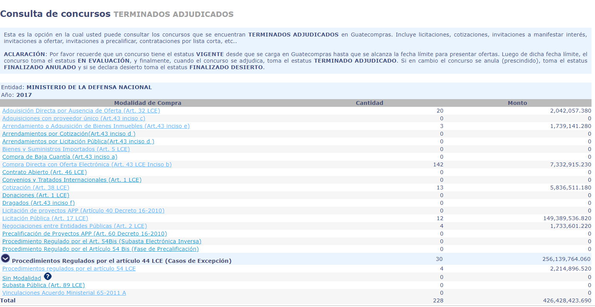

Tres radares, 33 millones de dólares y un contrato mal hecho
05 de marzo de 2019
Uno de los contratos más caros de los últimos 14 años en materia de seguridad, fue el que el Ministerio de la Defensa Nacional concedió a la empresa española Indra Sistemas, S.A., por la compra e instalación de tres radares. Desde 2016, la Contraloría General de Cuentas denunció el contrato al Ministerio Público y determinó que se soslayaron al menos tres leyes nacionales.
Por Suchit Chávez
El Ministerio de la Defensa Nacional invirtió 33 millones 220 mil dólares y seis años para la compra e
instalación de tres radares que, según su planteamiento institucional, servirían para la supervisión de la
biósfera guatemalteca y combate al narcotráfico. Esta es una de las cinco contrataciones más caras en el área de
seguridad en Guatemala y, al igual que las otras cuatro, también fue adquirida bajo la modalidad de «casos de
excepción». La Contraloría General de Cuentas denunció el contrato ante el Ministerio Público después de una
auditoría especial.
La única recomendación que los auditores de la Contraloría hicieron al Ministerio de la Defensa fue que previo a
firmar cualquier tipo de negociación el Ministerio de la Defensa debe cumplir todas las leyes aplicables
vigentes en Guatemala al momento de efectuar cualquier contrato.
Según el informe de auditoría, del que Laberinto del Poder tiene una copia, se trata de un contrato «suscrito
con base legal no aplicable», debido a que establece que cualquier reclamación se hará con base en la
legislación española, «incumpliendo las leyes vigentes aplicables en la República de Guatemala, desproveyendo al
Estado de Guatemala de cualquier derecho o reclamo que surgiera durante la ejecución del mismo».
La auditoría especial fue efectuada en 2016 y abarcó el período del 12 de diciembre de 2012 al 3 de septiembre
de 2015. Y el contrato se pagó en 2017, cinco años después de su firma. Desde un año antes la Contraloría
cuestionó la forma cómo se llevó a cabo la contratación, las varias leyes que se pasaron por alto y la
deficiencia de la cartera de la Defensa en demostrar que el gasto era necesario.

Acta que certifica entrada en vigor de contrato entre Indra Sistemas, S.A. y el Ministerio de la Defensa nacional, desde el 12 de diciembre de 2012 y disponible en los documentos anexos en Guatecompras, enviada al BBVA.
En el acta de firma de contrato consta que la negociación empezó en 2010, cuando el Ministerio de la Defensa
preguntó directamente a INDRA Sistemas, S.A. qué propuesta tenía para proveer tres radares. En el análisis
de la Contraloría se establece que nunca, durante esos siete años, volvió a evaluarse la necesidad de tener
esos radares en funcionamiento, con una capacidad de alcance requerida de 110 millas náuticas.
En la documentación del concurso, que fue subida toda a la plataforma Guatecompras hasta el 6 de enero de
2017, cuando el proceso ya estaba finalizado, solo consta un acta de dos páginas de una reunión de la
Comisión Técnica Consultiva, para exponer el proyecto que fue aprobado ese mismo día, el 20 de diciembre de
2010. En esa acta se menciona que la reunión es seguimiento al acuerdo ministerial de marzo de 2008, llamado
Implementación del Sistema de Vigilancia y Protección de la Biósfera de Guatemala (C4I).
INDRA Sistemas, S.A. es una compañía española que estuvo inscrita como proveedora del Estado Guatemalteco
durante aproximadamente seis años. Sin embargo, levantó sus operaciones en 2006 y por ello su estatus en
Guatecompras es «Inhabilitado».
De acuerdo al portal de información empresarial español Infocif.es, INDRA es una compañía dedicada al sector
aeroespacial y de defensa, y fue fundada hace 27 años. Posee 11 mil empleados y durante los últimos cinco
años ha tenido contratos por 487 millones de euros con el Estado español. El portal de negocios Bloomberg
sitúa sus ingresos para 2017 en tres mil millones de euros, con un margen de ganancia del 4.2 %.
Hasta ahora no había manera de dar seguimiento al gasto de más de 33 millones de dólares efectuado por el
Estado guatemalteco, porque el concurso por la compra de los radares no existió formalmente dentro de
Guatecompras durante todos esos años. La unidad compradora fue la Dirección de Finanzas del Ministerio de la
Defensa. El contrato efectuado con INDRA Sistemas, S.A. fue ingresado al sistema hasta que el pago había
finalizado. Los documentos y las fases del proceso distan entre sí en razón de minutos apenas.
Óscar Pérez, vocero del Ministerio de la Defensa Nacional, asegura que el contrato con Indra se hizo de esa
manera «porque la ley así lo permitía». Pérez hace referencia
al decreto de 2012 del Congreso de la
República que avaló un préstamo para la compra de aviones brasileños —que no llegó a concretarse—, y el otro
de 33 millones de dólares con el BBVA, para la compra de los radares.
Según el vocero, fue hasta ese año que el proyecto cuajó porque «antes se caía, y cada gobierno lo declaraba
lesivo». El gobierno incluso tuvo que pagar una multa de 300 mil dólares por incumplimiento del contrato de
compra, asegura Pérez.
La explicación que da Pérez para la subida tardía de los documentos de compra al portal Guatecompras es que
«la Ley de Contrataciones vigente cuando se efectuó la compra establecía que los contratos sin concurso se
debían subir los documentos una vez recibido el bien».
Sin datos
La Contraloría no encontró información del contrato en el Sistema de Contabilidad Integrada, debido a que la compra se hizo de manera directa con la casa matriz de Indra Sistemas, S.A., en España, y el banco español BBVA.
Acta que certifica entrada en vigor de contrato entre Indra Sistemas, S.A. y el Ministerio de la Defensa nacional, desde el 12 de diciembre de 2012 y disponible en los documentos anexos en Guatecompras, enviada al BBVA.
Detalle del portal Guatecompras, de noviembre de 2018, donde consta el NOG del contrato entre el MDN e Indra Sistemas, S.A. por tres radares, con especificaciones de tipo de compra efectuado.
Aunque la Contraloría no lo planteó como un hallazgo formal, en su auditoría especial sugiere que no se
le puede dar seguimiento al gasto el Ministerio de la Defensa porque el tipo de contrato que se hizo fue
«comercial», regido bajo legislación extranjera, y con el aval de garantía de un banco español.
Aunque se solicitó ampliar información de la auditoría a través de una entrevista con la Contraloría, a
febrero de 2019 aún no habían contestado la petición.
El contrato entre Indra Sistemas, S.A. y el Ministerio de la Defensa Nacional establece que la
protección de datos personales está bajo jurisdicción legal española, y no la guatemalteca.
La Contraloría admite que las compras por excepción son viables cuando se trate de bienes que no se
produzcan en el país y cuando impliquen la adquisición de armamento, así como que para la obtención de
los radares medió un decreto del Congreso, pero también señala que el Ministerio de la Defensa no
respetó otro tipo de legislación, como la Ley de Probidad, la Constitución de la República, Ley del
Organismo Judicial y la misma Ley de Contrataciones del Estado.
La denuncia presentada por la Contraloría ante el Ministerio Público incluye a dos ministros de la
Defensa con responsabilidad mancomunada: Ulises Noé Anzueto Girón (2012-2013) y Manuel Augusto López
Ambrocio (2013-2015), señalados como autoridad responsable. Ambos exministros están procesados en el
caso Coperacha.
El Ministerio de la Defensa negó a los auditores de la Contraloría acceso a los documentos
fundamentales del proceso de adquisición, como el Estudio de Impacto Ambiental, el dictamen legal de
la Dirección de Asuntos Jurídicos de ese ministerio, y las bases del proyecto de contratación.
La falta de tal documento, señala la auditoría, no permitió establecer la pertinencia de adquirir
los radares o no, así como si el precio pagado por los aparatos era adecuado o no. «La falta de
ofertas de otros proveedores, las características particulares y/o específicas de los productos
adquiridos y el número limitado de los proveedores que se dedican a la fabricación de radares a
nivel mundial, no permitió establecer si la selección del tipo y modelo del radar, fue la más
adecuada en función del Proyecto de Construcción del Sistema de Protección y Vigilancia de la
Biósfera. No se pudo establecer si el precio de los radares adquiridos es razonable», dice
literalmente la auditoría.
El vocero del Ministerio de la Defensa asegura que los documentos sí existen y que el proyecto se
efectuó con colaboración del Ministerio del Ambiente y Recursos Naturales. «Que la Contraloría diga
otra cosa, que lo demuestre». Además argumenta que «la Contraloría no mira licencias ambientales».
Aunque la Contraloría enfoca su atención en la compra de los radares, también especifica que los
aparatos iban aparejados con otro proceso de compra. Se trató del Programa de Comando, Aviones,
Control, Comunicaciones, Cómputo e Inteligencia C4I, que implicaba el software y toda la logística
de control para los radares. Pero ese proyecto fue dejado de lado.
«Al haberse cancelado la compra del Programa de Comando (…), y haber adquirido únicamente los tres
radares que son un complemento de este componente, no se puede establecer si los radares van a
cumplir con el objetivo primordial de generación de información, que permita contribuir a la
sostenibilidad socio-ambiental del país, protección de recursos naturales, combate al narcotráfico,
crimen organizado y fortalecimiento de la capacidad de las instituciones gubernamentales encargadas
de la soberanía y la seguridad nacional, lo que puede provocar que la inversión haya sido
innecesaria, o para su funcionamiento provoque el desembolso de más recursos económicos», cuestiona
la auditoría.
El contrato establece que los radares serían instalados en la zona del aeropuerto Internacional del
Mundo Maya (Petén), aeropuerto de San José (en el Pacífico), y zona de Puerto Barrios (Atlántico).
Al visitar los auditores el aeropuerto de Petén, constataron que el radar instalado en ese lugar
«fue ubicado frente a uno ya existente, lo que podría ocasionar algún tipo de interferencia».
Mientras que en el Puerto San José, advirtieron que el aparato «fue instalado en un área que pudiera
corroer la estructura y los componentes del radar, por la cercanía a un ambiente altamente húmedo y
salino».
Pérez comenta que los radares funcionan a su máxima capacidad, ya que el Centro de Comando para
operarlos fue donado por Estados Unidos. El vocero asegura que los radares están diseñados para la
detección «de trazas ilegales» y que el hecho de que uno haya sido instalado frente a otro no
representa ningún problema, «porque están planeados para cosas diferentes».
Para demostrar la funcionalidad Pérez proporciona cifras: de 6,558 paquetes de cocaína incautados en
2016, se pasó a 23,232 paquetes de cocaína incautados en 2018. En porcentajes, según las cifras del
Ministerio de la Defensa, el 65% corresponde a incautaciones en mar.
Stuardo Campo, jefe de la Fiscalía contra la Corrupción, quien investiga la denuncia presentada por
la Contraloría, dice que están a la espera de un último dictamen técnico para decidir los pasos a
seguir. «Tenemos pendientes un par de diligencias relacionadas con cuestiones eminentemente
técnicas, indistintamente del informe de Contraloría. Se requiere de un experto que nos pueda
determinar sobre algunos puntos» como alcance, precio y características de los radares, explica.